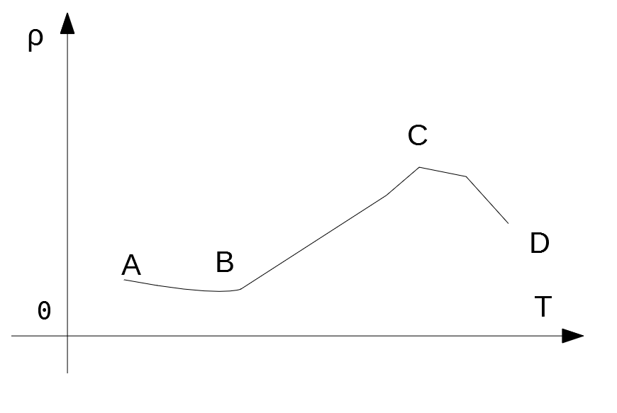
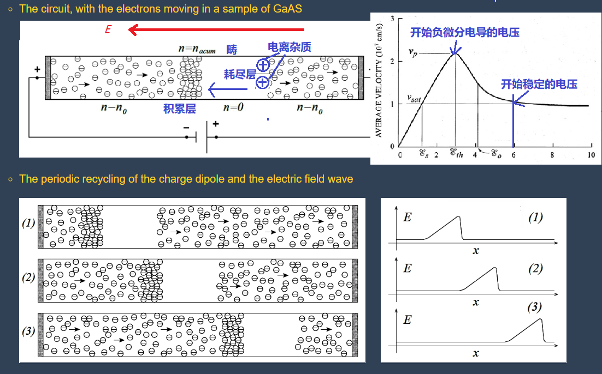

第四章
半导体的导电性
主要内容
- 载流子的漂移运动与迁移率
- 载流子的散射
- 迁移率与杂质浓度和温度的关系
- 电阻率与杂质浓度和温度的关系
- 玻尔兹曼方程，电导率的统计理论
- 强电场下的效应，热载流子
- 多能谷散射，耿式效应
4.1 载流子的漂移运动与迁移率
有外加电场（电压）时，导体内的自由电子受到电场力的作用，沿着电场的反方向定向移动构成电流，这种运动，叫做载流子的漂移运动。
4.1.1 欧姆定律
以金属导体为例，在导体的两端加以电压$U$（单位伏特，简称伏，$V$），导体内就形成电流，电流强度(单位为$A$，安培，简称安)定义式为： $$ I=\frac{U}{R} \tag{4-1} $$，其中$R$为电阻(单位为$\Omega, ohm$欧姆)，如果$R$为常数，则式（4-1）即为欧姆定律。
$R$在数值上与导体的长度$l$、导体横截面积$s$有关，即： $$ R=\rho\frac{l}{s} \tag{4-2} $$，其中$\rho$为电阻率（单位为$\Omega\cdot m$，习惯上用$\Omega\cdot cm$）。
$R$的倒数为电导率$\sigma$（单位为$S/m 或 S/cm$，西门子/米，或西门子/cm），即： $$ \sigma=\frac{1}{\rho} \tag{4-3} $$
若导体的电流分布不均匀，欧姆定律不能直接使用，应该使用电流密度(单位为$A/m^2, A/cm^2$)，如下定义： $$ J=\frac{\Delta I}{\Delta s}=\frac{I}{s}，s \to 0 \tag{4-4} $$
若引入电场强度$\mathscr{E}=\frac{U}{l}$(单位$V/m$或$V/cm$)，可以得到微分形式的欧姆定律： $$ J=\sigma \mathscr{E} \tag{4-7} $$，即：单位面积上的电流密度=电导率 × 电场强度
4.1.2 漂移速度和迁移率
设导体内任意一个截面$A$，电流为1秒钟内通过截面$A$的电量，在$A$面右方，距离$A$面为$\overline{v_d}\times 1$(秒)处做$O$面，则$OA$截面间的电子，在$1$秒内均能通过$A$面，设$n$为电子浓度，则$OA$间的电子数为$n\overline{v_d}\times 1 \times s$，乘以电子电量即为电流，所以： $$ I = -nq\overline{v_d}\times 1 \times s \tag{4-8} $$
4.1.2 漂移速度和迁移率
由于$J=\frac{I}{s}$，可以得到 $$ J=-nq\overline{v_d}=\sigma\mathscr{E} \tag{4-9} $$
令$\mu=\left|\frac{\overline{v_d}}{\mathscr{E}}\right|$，$\mu$称为电子的迁移率，表示单位电场强度下电子的平均漂移速度，这样电流密度可以改写为： $$ J=nq\mu\mathscr{E} \tag{4-12} $$
由（4-9）可以得到： $$ \sigma=nq\mu \tag{4-13} $$，即电导率($\sigma$)与迁移率($\mu$)之间的关系。
4.1.3 半导体的电导率和迁移率
在半导体中，包含电子电流和空穴电流，其方向可以从下图中看到。
以电流密度的形式来看，有 总电流强度 = 电子电流强度+空穴电流强度： $ J=J_n+J_p=(n\mu_n+p\mu_p)q\mathscr{E}$ 。
以电导率($\sigma=J/\mathscr{E}$)来看： $ \sigma=(n\mu_n+p\mu_p)q $ 。
对于n型的半导体，由于$n\gg p$： $ \sigma=nq\mu_n $ 。
对于p型的半导体，由于$p\gg n$： $ \sigma=pq\mu_p $ 。
对于本征的半导体： $ \sigma=n_iq(\mu_n+\mu_q) $ 。
4.2 载流子的散射
4.2.1 载流子的散射的概念
在半导体中，载流子在运动中不断受到晶格振动或电离杂质以及其他因素的影响而产生散射，其速度的方向和大小不断变化。
所谓自由载流子，实际上只有在两次散射之间才是自由运动的，这个自由运动的路程称为自由程，一般讨论的是大量载流子在统计意义上的平均自由程，其所花时间称为平均自由时间。
在外电场作用下，载流子存在两种不同的运动：一是在电场作用下的迁移运动，另一个是阻碍其运动的散射作用，因此载流子在恒定电场下，并不会一直加速，而是最终达到一个平衡的平均速度。
4.2.2 半导体主要散射机构
【1】电离杂质的散射（Impurity scattering）
散射概率：$P_i \propto N_iT^{-3/2}$，这里$N_i$为杂质浓度，$T$为温度。
【2】晶格振动的散射（Lattice scattering）：横波和纵波
纵波(longitudinal wave)

横波(Transverse wave)

【2】晶格振动的散射（Lattice scattering）：声学波和光学波
对硅、锗、砷化镓等半导体，其原胞含有两个原子，每个原子产生三个格波，共产生6个格波，频率最低的三个称为声学波，频率最高的三个称为光学波。
【2.1】声学波（声子：acoustical phonons）散射(共价键)
角频率为$\omega_a$的格波，能量也是量子化的，必须是：$(n+\frac{1}{2})\hbar\omega_a$，称为
当晶体吸收能量为一个$\hbar\omega_a$时，即晶格能量增加并改变振动状态，相当于
也就是说，我们可以把电子在晶格中因为碰撞而导致能量的变化，也就是散射，称为电子与声子的碰撞。
对于声子，我们可以看到基本上只有长纵波的声子起到散射作用，其散射的概率为：$P_s=\displaystyle\frac{\mathscr{E}_c^2k_0T(m_n^*)^2}{\pi\rho\hbar^4 u^2}v\propto T^{3/2}$
【2.2】光学波（光学声子：optical phonons）散射（离子键为主）
在离子型半导体，如IV-VI族化合物如硫化铅等，离子键占优势，此外也包括III-V族如砷化镓的离子键部分，同样也是长纵光学波有重要的散射作用，光学波散射是非弹性的，电子能量发生改变。
对于硅、锗等半导体，温度不太低的时候，光学波也有相当的散射作用。
其散射概率为： $$ P_o\propto \displaystyle\frac{(\hbar\omega_l)^{3/2}}{(k_0T)^{1/2}}\left[\displaystyle\frac{1}{\exp\left(\displaystyle\frac{\hbar\omega_l}{k_0T}\right)-1}\right]\displaystyle\frac{1}{f\left(\displaystyle\frac{\hbar\omega_l}{k_0T}\right)} $$
从上式可见，温度$T$较低时，光学散射概率很低，只有声子的散射；当温度上升，平均声子数（式中中括号的部分）大幅上升，散射概率上升。
【3】其他因素引起的散射
【3.1】等同能谷间散射
谷间散射和温度有关，低温时谷间散射很少，而谷间散射是非弹性的。
【3.2】中性杂质散射
温度很低，杂质重掺杂的半导体中，未电离的杂质起到主要的散射机构作用，影响的主要因素是杂质浓度。
【3.3】位错散射
位错相当于杂质，会形成类似施主杂质的正电中心和受主杂质的负电中心，从而产生类似电离散射的效果。
【3.4】合金散射
主要是混合晶体，特别是原子排列无序的情况下。
4.3 迁移率（Mobility）与杂质浓度和温度的关系
4.3.1 平均自由时间（collision time）和散射（scattering）概率的关系
$\tau =\displaystyle\frac{1}{P}$
平均自由时间在数值上等于散射概率的倒数。
4.3.2 电导率、迁移率与平均自由时间的关系
电子迁移率：$\mu_n =\frac{ | \overline{v_n} | }{\mathscr{E}}$, 这里$\overline{v_n}$是平均电子漂移速度，$\mathscr{E}$是电场强度
由此得到：$\mu_n =\frac{ q\tau_n }{m_n^*}$, 其中$\tau_n$是电子的平均自由时间；
对应得到空穴的迁移率：$\mu_p =\frac{ q\tau_p }{m_p^*}$, 其中$\tau_p$是空穴的平均自由时间；
由此得到不同材料的电导率： $$ \left. \begin{align*} n型, \qquad &\sigma_n=nq\mu_n=\frac{nq^2\tau_n}{m_n^*} \\ p型, \qquad &\sigma_p=pq\mu_p=\frac{pq^2\tau_p}{m_p^*} \\ 混合型, \qquad &\sigma=nq\mu_n+pq\mu_p=\frac{nq^2\tau_n}{m_n^*}+ \frac{pq^2\tau_p}{m_p^*} \end{align*} \right\} $$
4.3.2 电导率、迁移率与平均自由时间的关系
由于硅、锗的导带极值有六个，所以有效质量要改变形式： 导带电子的迁移率（电导迁移率）$\mu_c=\frac{ q\tau_n }{m_c}$, 其中$m_c$是电导有效质量， 定义为：$\frac{1}{m_c}=\frac{1}{3}\left(\frac{1}{m_l}+\frac{2}{m_t}\right)$
这里$m_l$, $m_t$分别是纵向有效质量和横向有效质量，可以在附录B中找到。
4.3.3 迁移率与杂质浓度和温度的关系
由于平均自由时间是散射概率的倒数，即：$\tau=\frac{1}{P}$
对于不同的散射机构：
- 电离杂质散射：$\tau_i \propto N_i^{-1}T^{3/2}$
- 声学波散射：$\tau_s \propto T^{-3/2}$
- 光学波散射：$\tau_o \propto \left[\exp\left(\frac{\hbar\omega_l}{k_0T}\right)-1\right]$
由于$\mu = \frac{q\tau}{m^*}$，这里$m^*$可以是$m_n^*, m_p^*, m_c$，也就是迁移率是正比于平均自由时间，由此上面的不同散射机构的迁移率影响关系也一致。
对于含有多种散射机构的半导体材料，其总的散射概率是所有概率之和，也就是：$\frac{1}{\tau}=\frac{1}{\tau_I}+\frac{1}{\tau_{II}}+\frac{1}{\tau_{III}}+...=P_I+P_{II}+P_{III}+...$， 即 $\frac{1}{\mu}=\frac{1}{\mu_1}+\frac{1}{\mu_{II}}+\frac{1}{\mu_{III}}...$
[1] 硅、锗等半导体的迁移率
由于掺杂的硅、锗半导体，主要的散射机构是声学波散射和电离杂质散射
对于不同的散射机构：
- 电离杂质散射：$\mu_i =\frac{q}{m^*}\frac{T^{3/2}}{BN_i}$
- 声学波散射：$\mu_s = \frac{q}{m^*}\frac{1}{AT^{3/2}}$
所以，总的迁移率是：$\mu = \frac{q}{m^*}\frac{1}{AT^{3/2}+\frac{BN_i}{T^{3/2}}}$
[2] GaAs 等III-V族化合物半导体的迁移率
主要的散射机构是声学波散射、光学波散射和电离杂质散射
在高纯度($N_D/N_A \le 10^{14}/cm^3$)或低浓度杂质($N_D/N_A \le 10^{17}/cm^3$)，
在高杂质纯度($N_D/N_A \ge 10^{18}/cm^3$)，在
从上图可以看到，杂质浓度达到一定值后，少子和多子的迁移率发生变化。
迁移率（多子）与杂质浓度之间的关系
从图可以看到，温度固定时，随着
| 材料 | 电子迁移率[$cm^2/(V\cdot s)$] | 空穴迁移率[$cm^2/(V\cdot s)$] |
|---|---|---|
| 锗 Ge | 3800 | 1800 |
| 硅 Si | 1450 | 500 |
| 砷化镓 GaAs | 8000 | 400 |
注意：
4.4 电阻率(Resistivity)及其与杂质浓度和温度的关系
4.4.0 电阻率的计算公式
不同材料的电阻率： $$ \left. \begin{align*} 一般半导体, \qquad &\rho=\frac{1}{nq\mu_n+pq\mu_p} \\ n型, \qquad &\rho_n=\frac{1}{nq\mu_n} \\ p型, \qquad &\rho_p=\frac{1}{pq\mu_p} \\ 本征半导体, \qquad &\rho_i=\frac{1}{n_iq(\mu_n+\mu_p)} \end{align*} \right\} $$
4.4.1 电阻率和杂质浓度的关系
轻掺杂（$N_D \lt 10^{18}/cm^3$ ）时，基本线性关系，这是因为室温下轻掺杂基本上完全电离，$n_0 \approx N_D$；
当掺杂更多时，一个是室温时不能完全电离，二是迁移率随杂质浓度增加也开始下降。
方块电阻(sheet resistance)及其应用
由于$R_S=\frac{\rho}{t}$，即厚度$t$一致时，$R_S$和$\rho$的趋势是一样的。
4.4.2 电阻率和温度的关系
本征半导体的电阻率随温度上升而下降，这是半导体区别金属的重要特征。
对于杂质半导体，如上图所示，电阻率随温度的变化比较复杂：
- 如图AB段，温度很低，载流子主要由杂质电离提供，随温度上升，杂质电离迅速上升，电导率上升，电阻率下降；
- 如图BC段，杂质完全电离，温度上升也没有更多载流子增加，但声学波散射随温度上升影响迅速增加，导致电阻率上升；
- 当温度继续上升，本征激发占主要作用，这时载流子继续增加，导致电导率上升，电阻率下降。
4.5 玻尔兹曼方程，电导率的统计理论
在前面的计算中，把电子的平均自由时间$\tau$看作一个常数，但实际这是要根据统计来求平均值的；
另一个问题，是假设散射各向同性，但实际根据晶向不同，散射在不同方向的速度是不同的。
4.5.1 弱电场下的球形等能面的电导率
电导率：$\sigma = \displaystyle\frac{nq^2\left \langle \tau v^2 \right \rangle}{m_n^* \left \langle v^2 \right \rangle}$
其中$\left \langle \tau v^2 \right \rangle=\displaystyle\frac{\int{\tau v^2\mathrm{d}n}}{\int{\mathrm{d}n}}$， $\left \langle v^2 \right \rangle=\displaystyle\frac{\int{v^2\mathrm{d}n}}{\int{\mathrm{d}n}}$ 都是统计平均值，如果用平均自由程时间$\tau_n$来取代$\tau_n = \displaystyle\frac{\left \langle \tau v^2 \right \rangle}{\left \langle v^2 \right \rangle}$，即可得到原来的公式： $\sigma_n=nq\mu_n=\frac{nq^2\tau_n}{m_n^*}$
4.5.2 强电场下的效应，热载流子，欧姆定律的偏离

电场强度在$10^3 - 10^5 V/cm$范围内，不再满足欧姆定律，即这处电流密度 $J \neq \sigma \mathscr{E}$，这里电导率$\sigma$不再是常数，而是随着电场变化。
这种现象可以用光学波和声学波散射来描述：在电场强度不大时，载流子的速度不高，能量不大，这时的散射以声学波为主，这是弹性散射，晶格自身能量不增加，温度没上升，所以满足热平衡条件下的欧姆定律；
当电场继续增加，电子逐渐加速，能量增加，光学波散射逐渐增加，由于是非弹性散射，晶格吸收电子动能导致自身振动增加，于是宏观上表现为局部温度上升，这时热平衡被破坏，局部载流子称为热载流子，并被散射后的动能消失，导致平均漂移速度逐渐饱和；
4.6 多能谷散射，耿式效应
4.6.1 GaAs 的多能谷散射，以及负微分电导效应
由于迁移率: $\mu_n=\frac{q\tau_n}{m_n^*}$，如图所示，当处于的电场强度增加，导致电子从能谷1散射到能谷2时，由于有效质量上升，导致迁移率下降，电子的电导率也下降。
4.6.2 耿式效应，体效应微波器件
作业
课本123页，第2题； 课本124页，第8题， 第12题
2. 试计算本征$Si$在室温时的电导率，设电子和空穴的迁移率分别为$1450cm^2/(V\cdot s)$和$500cm^2/(V\cdot s)$。当掺入百万分之一的$As$后，设杂质全部电离，试计算其电导率，比相同温度下的电导率增大了多少倍？
解：如图，可以查出$T=300K$时，$Si$的本征载流子浓度$n_i \approx 4\times10^{10}/cm^3$
此时本征下电导率: $\sigma=n_iq(\mu_n+\mu_q) \\ =4\times10^{10}\times1.602\times10^{-19}(1450+500)\\ =1.25\times10^{-5} (S/cm)$
从课本第2页，可知硅晶体中原子浓度为$5\times10^{22}/cm^3$，加入百万分之一的$As$（V族），即$N_D=5\times10^{22-6}=5\times10^{16}/cm^3$，查课本4-14（a）可得此时$\mu_n=800cm^2/(V\cdot s)$
设全部电离，并且此时是n型半导体，所以：$\sigma_n' \approx N_Dq\mu_n=5\times10^{16}\times 1.602\times10^{-19}\times 800=6.4 S/cm$，可见比本征下增加了$\frac{\sigma_n'}{\sigma}=\frac{6.4}{1.25\times10^{-5}}=5.12\times10^5$倍。
8. 截面积为$0.001cm^2$的圆柱形纯硅样品，长$1mm$, 接在$10V$的电源上，室温下希望通过$0.1A$的电流，问：【1】样品的电阻是多少？【2】样品的电阻率是多少？【3】应该掺入多少浓度的施主杂质？
解： 【1】电阻为：$R=\frac{U}{I}=\frac{10}{0.1}=100\Omega$
【2】电阻率为：$\rho=\frac{R\cdot s}{l}=\frac{100\times0.001}{0.1}=1\Omega\cdot cm$
【3】室温下，可以看作完全电离，查图4-15(b)可以得到，施主浓度为$5\times10^{15}/cm^3$。
12. 试从图4-14(a)求室温时杂质浓度分别为$10^{15},10^{16}, 10^{17}/cm^3$的n型和p型硅样品的多子空穴和电子迁移率，并分别计算它们的电阻率，再从图4-15(b)分别求它们的电阻率。